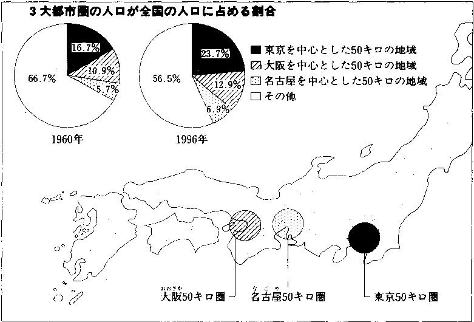

（1）
栄養
問1 栄養の偏りによるビタミン欠乏の症状が見られたので、食生活の改善を指導した。
問2 伝統的な文化の枠をこえて物事を考えるのはむずかしいことだ。
問3 田中さんは、オリンピックの選手を志して、小さいころからコーチについて技を磨いてきた。
問4 会の存続について冒頭から激しい議論がかわされたが、司会者のてぎわがよく、会議は円滑に進み、折衷案ながらも結論が出せた。
（例）聴講するためには正規の手続きが必要です。
例の文の下線の言葉は、ひらがなで「せいき」と書きます。1から4の言葉はそれぞれ、1は「せいき」、2は「しょうぎ」、3は「しょうこ」、4は「せいり」と書きます。例の文の「せいき（正規）」と1の「せいき（世紀）」はひらがなで同じ書き方ですから、正解は1です。
| （例） | ● | ② | ③ | ④ |
問1 彼はとくはいんとしてニュースを正しくほうどうすることにしめいかんを持っている。
問2 ゆうべのコンサートでは、ピアノのえんそうに合わせて詩のろうどくをするという新しいこころみが行われた。
問3 生活のリズムがくるって、まんせいのすいみん不足になってしまった。
問4 高齢化に伴うかそかと産業活動の停滞とのあくじゅんかんからだっすることが、人々のせつじつな願いとなっている。
問5 副社長はライバル会社とのがっぺいにきょうこうに反対した。
（例）こうほしゃがたくさん出た。
例の文の下線の言葉は「候補者」と書きます。1から4の言葉はそれぞれ、1は「参考」、2は「専攻」、3は「天候」、4は「貢献」と書きます。例の文の「候補者」の「こう」と、3の「天候」の「こう」は同じ漢字ですから、正解は3です。
| （例） | ① | ② | ● | ④ |
（例）とおす……その作家は、生涯独身をとおした。
はじめに示された文の中の「とおす」は、独身を「つづける」という意味です。1、2、3の「とおす」は、それぞれ「通過する」、「案内する」、「合格させる」という意味ですが、4の「とおす」は、従来の方針を「つづける」という意味ですから、正解は4です。
| （例） | ① | ② | ③ | ● |
川に上流と下流があるように、われわれのくらしにも上流（アップストリーム）と下流（ダウンストリーム）がある。栓をひねると出てくる水の来るところは上流であり、流しに捨てた水の行く先は下流である。米、肉、魚、野菜、電気、ガス、石油、こういったくらしに必要なものを供給するところが上流であり、台所で出る野菜くず、便所の屎尿、こういった邪魔物をほうり出すところが下流である。
われわれは、例外なく、下流より上流の方を気にする。上流が汚れ、乱れると、水や食べ物がまずくなり、危なくなり、くらしの楽しみが減り、からだが傷つけられやすくなるからである。上流にくらべて、下流に対する関心はゼロといってよいくらいうすい。目の前においておくと嫌なものを、見えないところ、遠いところに持っていくだけで、もう、すっかりその存在さえ忘れてしまう。（ ② ）自家用車を運転している人は、気楽な気分で歩行者や自転車族に排気ガスを吹きつけているのだが、そのことを意識している人はほとんどいない。これなど下流に対する無関心の典型である。
それでも、昔、ずっと昔だと、上流と下流は、両方ともくらしのすぐそばに一緒にあって、誰の目にもその様子がよく見えていた。食べる肉がつい一刻前（注1）までは庭を走りまわっていた鶏であったり、野菜くずが庭のすみの穴に埋められ、しばらく後で堆肥（注2）になり畑に使われるといったことが、ありふれた風景であった。この当時だと、上流は自然と自分で監視していることになるし、自分は下流に関心がないといっても、少なくとも家族の中の一人がそれを始末していることは目にしていた。だから、直接手をつけなかったとしても、下流の状態は、まちがいなくみんなが知っていた。
上流と下流が両方ともそばにあるということは、自分の生活の上流が他人の生活の下流であるということである。それはまた、自分の下流が他人の上流であることでもあった。だから、そういう時代、人は（ ⑤ ）生活をしていた。飲み水を汲む流れのすぐ上でおしめ（注3）を洗うことは、いくら田舎でもつつしまれていたし、食べ頃の野菜に下肥（注4）をまくことは、絶対にしなかった。お互いにそのような知恵を働かしあって、人は生活を作っていた。
ところがやがて、都市と農村がわかれてきた。そして都市では、上流と下流が見えにくくなってきた。それは都市生活の一つの大きな特徴だった。
都市が大きくなるにつれ、都市のこの特徴は度が進んでいった。実際今では、自分の家の水道から出る水が、○○川の△△取水口から入る、あの濁りのある水だという実感を持って水を使っている人はいないだろう。関心の大きいはずの上流のことさえ、都市では、小学校の教科書と社会見学で見るだけになっている。まして下流に属するごみや下水のこととなると、それは観念の世界のことでしかないと言って過言でないだろう。それが現代の都市生活における“下流”の位置である。上流も見えないが、下流はそれ以上に見えないというのが、現代の都市生活の特徴なのである。
（吉村功『ごみと都市生活』による）
（注1）一刻前：時間的に少し前、先ほど
（注2）堆肥：肥料
（注3）おしめ：おむつ、赤ん坊の大便や小便を受けるために体に当てる布
（注4）下肥：人間の大便や小便を用いた肥料
「ドン」という鈍い音がしました。手近な窓から外を確かめてみましたが、別に異常はないようでした。台所へ飛んでいきました。ちょっとこげ臭いような匂いがしました。あわてて火の元を確かめましたが、火の気（注1）もありませんでした。窓が全部開いていて風が流れるので、匂いの元が分かりません。危険はなさそうなので、ひとまず安心して、脱水（注2）が終わっているはずの洗濯物を干そうと思いました。ところが脱水が途中で止まってしまっているのです。洗濯機の回りにこげ臭い匂いがしました。原因は洗濯機でした。
修理を頼んで分かったのですが、その洗濯機は問題になっている機種でした。ある年に作られた製品の一部の部品に欠陥があるとのことでした。メーカー側の対応は場合が場合だけに実に丁寧でした。
さっそく次の日、修理の人が来てくれました。二十代と五十代らしき二人の男の人で、言葉に素朴なお国なまり（注3）がありました。特に残暑の厳しい日の昼下がり（注4）、慣れぬ東京のしかも分かりにくい世田谷（注5）を、地図を片手に迷い迷い来てくれたらしく、二人ともシャツに汗がしみ出していました。
「本当にご迷惑をかけてしまって申し訳ありませんでした」と、二人はまるで自分たちが悪いことでもしたかのように、深々と頭を下げてから仕事にとりかかりました。途中、若いほうの人が、故障の原因だった部品を手に細かく説明してくれました。そして、他の個所も調べて、部品を交換してくれました。
「私たち今度のことで急に東京に呼ばれましたが、普段は工場で洗濯機作ってるんです。こんなにきれいに永いこと使ってもらってうれしいです。これでもう新品同様になりましたから、使ってやって下さい」
二人は洗濯機の外側を撫でるように布で拭きながらそう言って、帰っていきました。
以来、洗濯機は前にもまして実に快調（注6）です。大事に使おうと思っています。
（山内美郷『昼下がりのひとりごと』による）
（注1）火の気：火のある気配
（注2）脱水：水分を取り除くこと。洗濯機にこの機能がついている。
（注3）お国なまり：出身地の言葉の特徴
（注4）昼下がり：午後1時、午後2時のような午後の早い時間
（注5）世田谷：東京の中の地域名の一つ
（注6）快調：調子がいいようす
（1）百円玉の価値というものは、だれにとっても同じである。通常、ある人にとっては500円の価値を持っているのに、他の人にとっては20円の価値しか持たない百円玉は存在しない。だがここに、別の要素を加えると話は違ってくる。
オリンピック記念硬貨というものが発行されたことがある。この記念硬貨も、自動販売機に投入すれば、やはり百円の価値しか持たない。私自身は古銭（注1）の流通価格に関する知識を持たないが、しかしこれをコイン（注2）業者のところへ持っていくと150円で買ってくれたりする。コイン収集家なら、200円で譲ってくれと言うかもしれない。
（井上夢人「ハイパーテキスト小説への期待」『日本語学』1997年6月号による）
（注1）古銭：昔のお金
（注2）コイン：硬貨
（2）五十代から先の人生は、住まいなくしては語れない、見通しが立たない。
「子どもがなんとかしてくれるだろう」
「夫（あるいは妻）が考えていてくれるはず」
これは、甘い人頼りだ。もっとひどいのになると、
「国、行政がなんとかしてくれる」
漠然と、（ ）と思っている人が意外と多い。しかし、そんな都合のいい話は、どこにも転がっていない。誰も、なにもしてはくれない。自分の住まいは、自分の生き方そのものなのだから、これは、自分で考えるしかないのだ。
（佐橋慶女『気持ちよく生きる知的住居術』による）
（3）香りや音楽から、ふと思い出がよみがえることがある。
私は仕事でよくインドネシアへ出かける。飛行場に着くと、“ちょうじ”という植物の甘い香料（注1）が入ったたばこの香りがする。街を歩いていても、この香りが満ちあふれている。だから、この香りは、私に「インドネシアにきたのだなあ」という実感をあたえてくれる。このたばこの香りをローマ空港でかぎ、むしょうに（注2）インドネシアが恋しくなったことがあった。
（田沼武能『未知の国 すばらしい人たち』による）
（注1）香料：食べ物や化粧品などにいいにおいをつけるために入れるもの
（注2）むしょうに：非常に、自分でもおさえられないくらいに
（4）自然を相手にしていると、私たちのように気が長くなります。あせっても、どうしようもない。ところがみなさんは気が短くなりましたね。環境をこわす側も、逆に守る運動をする人たちも。自然が好きという、町の人がふえましたが、それでも「自然を見て」それだけでおしまい。自然の営み（注）がもつテンポとは全く縁のない接し方です。
（吉良竜夫「余白を語る」1991年4月12日付朝日新聞夕刊による）
（注）営み：活動
（5）次のグラフは三大都市圏の人口が全国の人口に占める割合を表したものです。

（国勢社『日本のすがた1998』、『1997/98年版日本国勢図会』による）
（6）下のAからDは、それぞれア、イ、ウ、エのどこかに入る文です。
一番悪い状況は、学校にコンピュータを入れてもほとんど誰も使えないことだ。
ア
そうして、
イ
そのときはわかったような気がするが、
ウ
こんなことでいいはずがない。
エ
そういう考え方を一言でいうと、
「ユーザー（注1）中心のインタフェース（注2）」。
このキーワード（注3）を使えば、
これを無視するメーカーや技術者は笑いモノになる。
使いにくい、わかりにくいというのは技術がわるい、使いやすくするのが技術の責任だ。
技術者たちがすべて支援する（注4）と称してあれこれ複雑なシステムを導入する。
「こんなことができますよ、あんなこともできるようにしておきました、どんどん使ってください」という。
彼らが去ってしまうと、さあ大変、かんたんなことのはずなのに、さっぱりわからない。
（佐伯胖『新・コンピュータと教育』による）
（注1）ユーザー：使う人
（注2）インタフェース：人間が容易にコンピュータを使えるようにするための仕組み
（注3）キーワード：問題の解決方法を示す重要なことば
（注4）支援する：力を貸して助ける